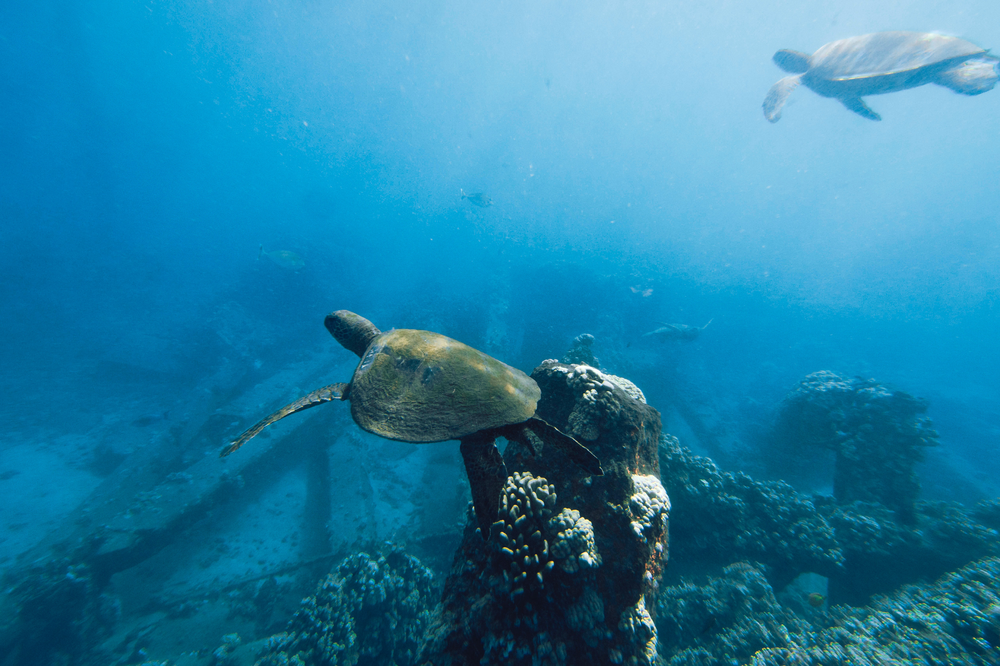
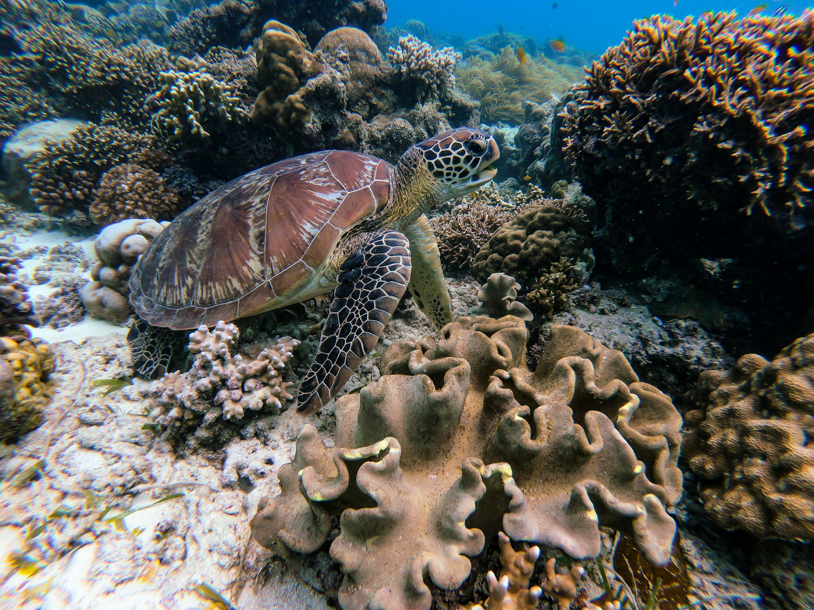

What is a hatchery?
A hatchery is a facility where eggs are hatched under artificial conditions, especially those of fish, poultry or even turtles. It may be used to breed rare or endangered species under controlled conditions.
Similarly, turtle hatcheries are dedicated facilities that protect turtle eggs from natural predators and human threats, providing a controlled environment for incubation. The hatchery ensures optimal conditions for the eggs to hatch, and once the hatchlings emerge, they are nurtured until they are strong enough to be released into the wild. Turtle hatcheries play a crucial role in conserving and protecting endangered sea turtle species, helping to boost their survival rates.

What makes turtles different from tortoises?
The shells of the turtles and tortoises differ. The Carapace or top part of the shell of the turtles is streamlined and short making swimming easy. On the other hand the shell of the tortoise is thick and more useful for their protection. The plastron or under shell of the two species differ in the same manner.
Another difference is that turtles have broad, flattened flippers whilst tortoises have short cylindrical limbs. The flippers facilitate swimming greatly but make it very difficult for females to move on the beaches where they come back to nest.
Why Turtles Deserve Attention
Turtles are important for several reasons, playing significant roles in ecosystems and benefiting both the environment and human societies. Turtles have diverse ecological roles that help maintain the balance of ecosystems. For instance, freshwater turtles help control populations of aquatic plants, algae, and invertebrates, contributing to the overall health of freshwater ecosystems. Sea turtles help regulate the populations of jellyfish, seagrass beds, and coral reefs, influencing the structure and function of marine ecosystems.
Turtles can serve as indicators of the overall health and quality of ecosystems. Their presence or absence can reflect changes in water quality, habitat degradation, or pollution levels. Monitoring turtle populations and their behavior can provide valuable insights into the overall ecological condition of an ecosystem.
